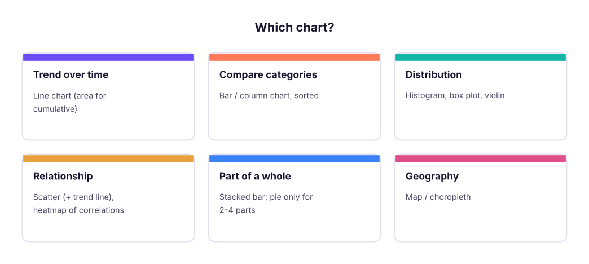
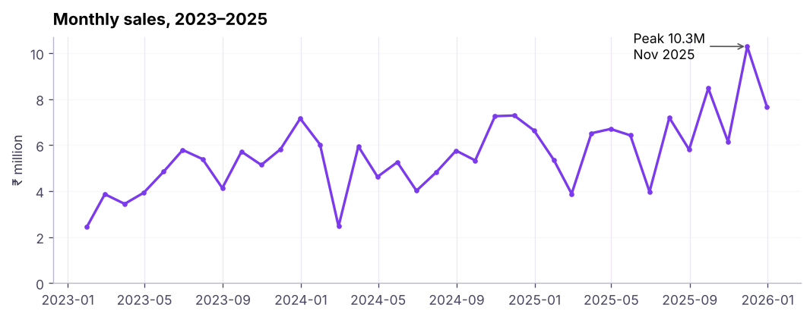
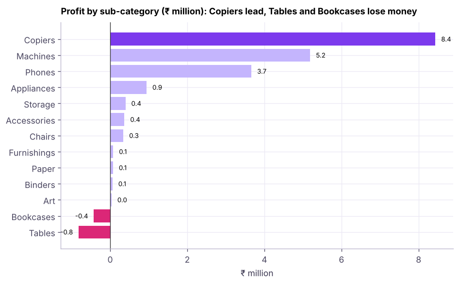
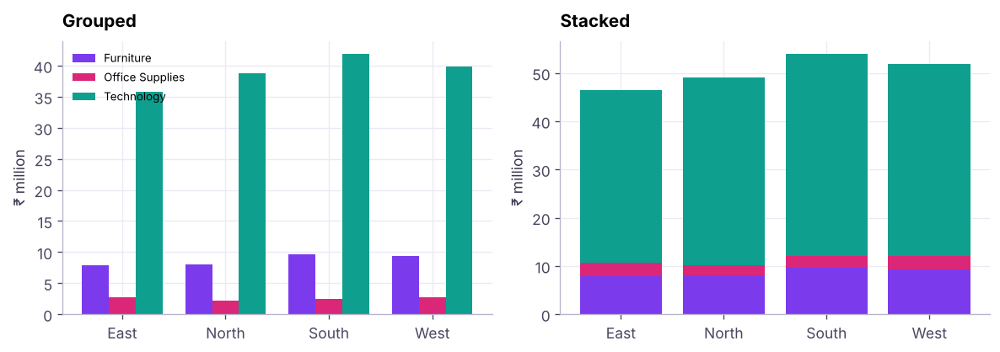
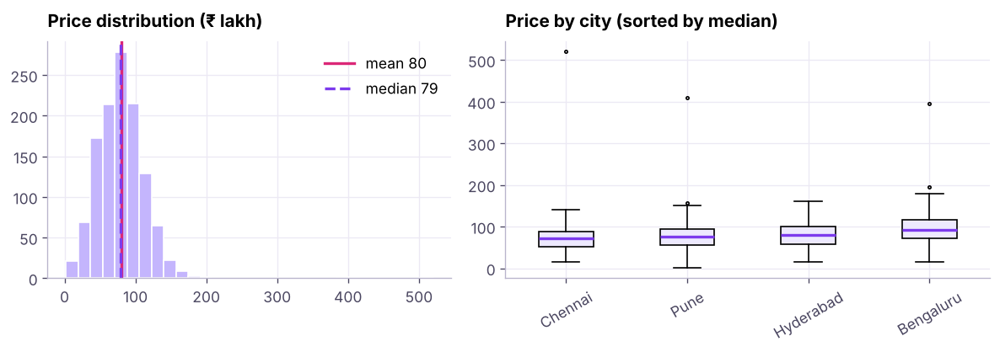
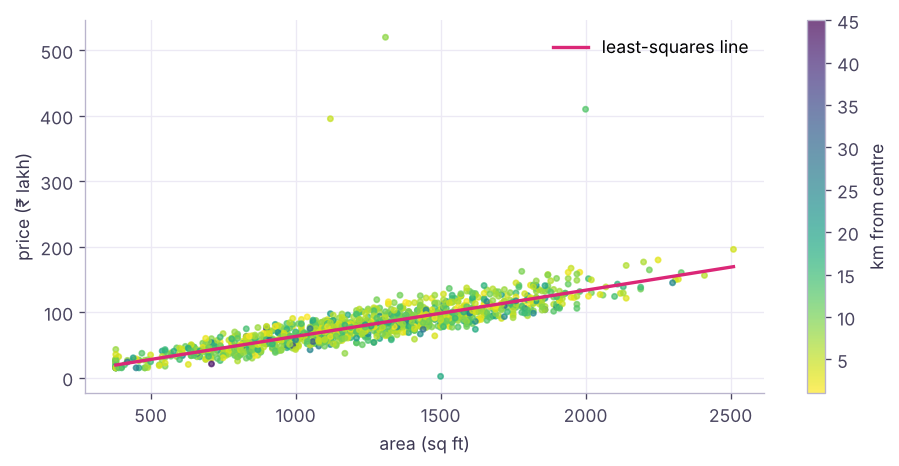
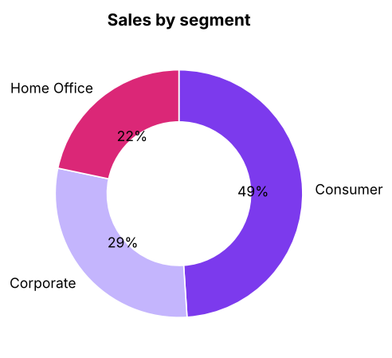
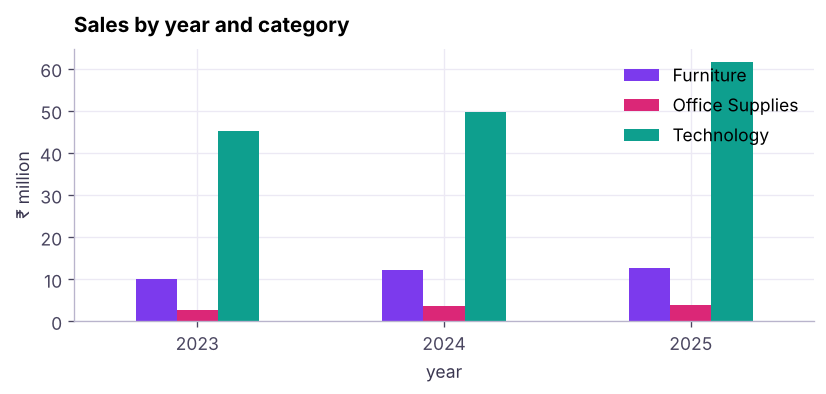

Data Visualisation I: Matplotlib and Choosing the Right Chart
Pick the right chart for the question and build it with Matplotlib's object-oriented API. Line, bar, histogram, scatter, box and pie charts, subplots, annotations, styling and saving, plus design rules that make charts honest and readable.
- Choose a chart type from the analytical question (trend, comparison, distribution, relationship, composition)
- Build charts with fig, ax = plt.subplots() and customise titles, labels, ticks, legends and colours
- Combine several charts with subplots and annotate key points
- Plot directly from pandas and save figures at publication quality
- Apply design rules: start bars at zero, remove clutter, label directly, use colour with purpose
Choose the chart from the question

The object-oriented API
Matplotlib has two styles. Use the object-oriented one: create a Figure (the canvas) and one or more Axes (plots), then call methods on the axes.

import matplotlib.pyplot as plt
fig, ax = plt.subplots(figsize=(9, 3.6)) # one figure, one axes
ax.plot(x, y) # draw
ax.set_title("..."); ax.set_xlabel("..."); ax.set_ylabel("...")
fig.savefig("chart.png", dpi=200, bbox_inches="tight")
plt.show() # in scripts; notebooks display automatically| Element | Method |
|---|---|
| Title, axis labels | ax.set_title, ax.set_xlabel, ax.set_ylabel |
| Limits, ticks | ax.set_ylim(0), ax.set_xticks, ax.tick_params(rotation=45) |
| Legend | label="..." in the plot call, then ax.legend() |
| Grid, spines | ax.grid(axis="y"), ax.spines[["top","right"]].set_visible(False) |
| Text, arrows | ax.text, ax.annotate |
| Reference lines | ax.axhline(y), ax.axvline(x), ax.axvspan |
| Number format | ax.yaxis.set_major_formatter(...) |
Bar charts

Grouped and stacked bars compare two dimensions:

Distributions: histogram and box plot

Bins matter: too few hide the shape, too many look noisy. Try bins="auto" or a few values.
Relationships: scatter

Part of a whole

For more than 4 parts, or to compare parts across groups, use (stacked) bars.
Plotting from pandas
DataFrames and Series have .plot(), a quick wrapper around Matplotlib that returns an ax you can keep styling.

kind= can be line, bar, barh, hist, box, scatter (with x=, y=), area, pie.
Subplots dashboards and saving
fig, axes = plt.subplots(2, 2, figsize=(11, 7), constrained_layout=True)
axes[0, 0].plot(...); axes[0, 1].barh(...); axes[1, 0].hist(...); axes[1, 1].scatter(...)
fig.suptitle("Sales overview", fontsize=15, weight="bold")
fig.savefig("overview.png", dpi=200, bbox_inches="tight") # also .svg / .pdf for crisp vector outputDesign rules that make charts honest
| Rule | Why |
|---|---|
| Bars start at zero | Truncated bars exaggerate differences |
| Sort categories by value | Faster comparison |
| Title states the insight | "Tables lose money" beats "Profit by sub-category" |
| Label directly, remove chart junk | Fewer eye movements |
| One highlight colour, grey for context | Colour carries meaning |
| Colour-blind safe palettes (viridis, Okabe-Ito) | About 1 in 12 men are colour-blind |
| Same scale when comparing panels | Avoid misleading comparisons |
| Avoid 3-D and dual axes when possible | They distort perception |
Summary
- Pick the chart from the question: trend → line, comparison → sorted bar, distribution → histogram/box, relationship → scatter, composition → stacked bar (pie only for a few parts).
- Use
fig, ax = plt.subplots()and style the axes: titles, labels, limits, spines, legends, annotations. plt.subplots(rows, cols)builds small multiples;fig.savefig(..., dpi=200, bbox_inches="tight")exports.- pandas
.plot()is a fast start that returns a Matplotlib axes. - Honest design: zero-based bars, sorted categories, insight titles, purposeful colour.
1. Which chart best shows a trend over 36 months?
2. Which chart shows the distribution of one numeric variable?
3. What does fig, ax = plt.subplots(1, 2) create?
ax becomes an array of two axes.4. Why should bar charts start at zero?
5. When is a pie chart acceptable?
6. How do you save a sharp image without cut-off labels?
(1) Line chart of monthly profit with a horizontal line at zero. (2) Sorted horizontal bar of sales by state (top 10). (3) Histogram of discount. (4) Scatter of discount vs profit (what do you see?). (5) A 2 × 2 dashboard of these four charts saved as PNG.
Show solution
mp = s.set_index("order_date")["profit"].resample("ME").sum()
fig, axes = plt.subplots(2, 2, figsize=(11, 7), constrained_layout=True)
axes[0, 0].plot(mp.index, mp / 1e6); axes[0, 0].axhline(0, color="grey")
st = s.groupby("state")["sales"].sum().nlargest(10).sort_values(); axes[0, 1].barh(st.index, st / 1e6)
axes[1, 0].hist(s.discount, bins=9)
axes[1, 1].scatter(s.discount, s.profit, s=4, alpha=.3) # profit falls as discount rises
fig.savefig("dashboard.png", dpi=150, bbox_inches="tight")Q: How do you choose a chart? Start from the question (trend, comparison, distribution, relationship, composition), the number of variables and the audience, then remove anything that does not help the message.
Q: What makes a chart misleading? Truncated bar axes, inconsistent scales, 3-D effects, cherry-picked ranges, dual axes with arbitrary scaling, and areas that do not match values.
Q: Matplotlib vs Seaborn vs Plotly? Matplotlib is the low-level foundation with full control; Seaborn adds statistical charts with good defaults on top; Plotly makes interactive web charts.
Practise more online
Free, trusted places to test yourself on this topic. Links open the original site in a new tab.